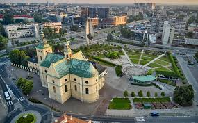
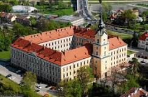
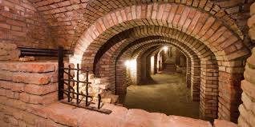

Podkarpackie
Najważniejsze miasta
Rzeszów
Rzeszów to dynamicznie rozwijające się miasto w południowo-wschodniej Polsce, znane z nowoczesnej architektury i historycznego rynku. Jego największym skarbem jest rzeszowska starówka oraz zabytkowy zamek, a także liczne instytucje kulturalne i edukacyjne, które przyciągają młodych ludzi z całego regionu. Zamek Lubomirskich
Dawna rezydencja magnacka, później przekształcona w twierdzę. Choć obecnie mieści się tu sąd, można podziwiać jego monumentalną architekturę i spacerować wokół murów.
Podziemna Trasa Turystyczna
Sieć historycznych piwnic i korytarzy pod Rynkiem, opowiadająca o życiu Rzeszowa w dawnych wiekach. Zwiedzający mogą zobaczyć rekonstrukcje dawnych sklepów i schronów.